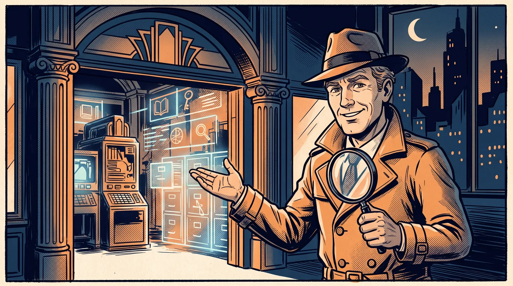

האטלס
העולמות, לפי סדר הלימוד
כל כרטיס: תגית המודול, השער מהיגספילד, המטאפורה, השפה הגרפית, הצבעוניות, אופי האתר והתרגיל המרכזי שלו.
Prompt Engineering | הנדסת פרומפטים
פתחו את המתכון ←
👨🍳 המטבח
Colorful claymation pop-art, soft plasticine textures, playful stop-motion look, saturated red yellow and teal palette, warm cozy lighting, no text
DNA עיצובי
פונט כותרותמתכון מנצח יוצא מהתנורVarela Round
פונט גוףקוראים מתכון רגוע ונעים בגובה שורה אווריריAssistant
פינותקופסאות 24px, כפתורים גליל מלא (999)
צפיפותמשוחרר ואוורירי (גובה שורה 1.85), סימטרי
תמונותפינות עגולות רכות, רוויה חמימה קלה
Data and Knowledge | דאטה וידע ארגוני
רדו למכרה ←
⛏️ מכרה הזהב
Japanese manga pop-art, bold ink lines, screentone dot shading, dynamic speed lines, vivid gold electric blue and hot pink palette, energetic shonen adventure style, no text
DNA עיצובי
פונט כותרותהעורק נחשף במעמקים!Karantina
פונט גוףטקסט דחוס ואנרגטי כמו בועת מנגהRubik
פינותקופסאות וכפתורים 6px, כמעט חדות
צפיפותצפוף והדוק (1.55), א-סימטרי עם הטיות חזקות, כותרות ענק
תמונותקונטרסט ורוויה מוגברים, מסגרת דיו עבה

חי באווירמודול 3
RAG | שליפה מוגברת ידע
פתחו את התיק ←
🕵️ תיק RAG | הבלש
Light-hearted noir comic book illustration, bold clean ink outlines, halftone dot shading, deep midnight blue and warm orange two-tone palette, cream paper texture, no text
DNA עיצובי
פונט כותרותהתיק נפתח בחצותFrank Ruhl Libre
פונט גוףשורות דוח מודפסות במכונת כתיבה שקטהHeebo
פינותקופסאות וכפתורים 4px, חיתוך עיתונאי
צפיפותהדוק (1.6), א-סימטרי: חותמות נוטות ובאנר מוטה קלות
תמונותספיה 25% וקונטרסט, כמו תצלומי ראיות
API and Webhooks
חברו את השיחה ←
☎️ המרכזייה
Mid-century advertising illustration, 1950s telephone exchange world, warm amber and dusty blue palette, halftone texture, no text
DNA עיצובי
פונט כותרותהקו מחובר, דברוSuez One
פונט גוףמדריך מרכזנית קריא בגופן חם ועגלגלAlef
פינותקופסאות וכפתורים 12px, מעוגל מיד-סנצ'ורי
צפיפותבינוני ומאוזן (1.7), סימטרי ומסודר
תמונותספיה 20%, חום נחושת של פרסומות שנות ה-50
n8n Automations | אוטומציות
עלו לרכבת ←
🚂 הרכבת
Vintage isometric railway world, retro travel poster texture, muted green brass and cream palette, warm evening light, no text
DNA עיצובי
פונט כותרותהרכבת יוצאת בזמןDavid Libre
פונט גוףלוח זמנים צלול שנקרא ממרחק של רציףHeebo
פינותקופסאות וכפתורים 10px, כרטיס נסיעה
צפיפותמסודר ומדויק (1.7), סימטרי כמו לוח רכבות
תמונותספיה 22%, גלויית נסיעות וינטג'
AI Agents | סוכני AI
קבלו את התדריך ←
🎯 צוות המשימה
1960s spy movie poster illustration, bold flat shapes, halftone print texture, dramatic diagonal composition, teal deep red and cream palette, retro espionage cool, no text
DNA עיצובי
פונט כותרותהמשימה יוצאת לפועלSecular One
פונט גוףתדריך קצר וחד, בלי מילה מיותרתAssistant
פינותקופסאות וכפתורים 2px, חיתוך פוסטר חד
צפיפותהדוק (1.6), אלכסוני וא-סימטרי
תמונותרוויה וקונטרסט מוגברים, הדפס פוסטר שטוח
Vibe Coding
פתחו את הסטודיו ←
📐 האדריכל
Blueprint world illustration, deep blueprint blue with white technical linework and warm orange highlights, glowing wireframes rising from paper, no text
DNA עיצובי
פונט כותרותהבניין קם מהניירAmatic SC
פונט גוףהערות שוליים מדויקות של שולחן שרטוטNoto Sans Hebrew
פינות0px, חיתוך שרטוט טכני, מסגרות מקווקוות
צפיפותאוורירי (1.75), סימטרי עם חותמות מוטות, רשת בלופרינט ברקע
תמונותכחול בלופרינט עם קווים לבנים זוהרים, מסגרת מקווקווית פנימית
Security and Governance | אבטחה
פתחו את המבצר ←
🏰 משמר הכספת
Medieval-meets-cyber comic illustration, torchlight mixed with neon cyan, royal purple steel and gold palette, circuit-engraved stone, no text
DNA עיצובי
פונט כותרותהשערים נסגרים בחצותNoto Serif Hebrew
פונט גוףמגילות משמר כתובות בסריף של כתב יד עתיקTinos
פינותקופסאות וכפתורים 8px, אבן מסותתת
צפיפותדרמטי והדוק (1.65), סימטרי עם חותמות מוטות, יומנים בכתב נטוי
תמונותקונטרסט ורוויה מוגברים: אור לפידים מול ניאון ציאן, מסגרות זהב
AI Adoption | הטמעת AI בארגון
עלו לרקטה ←
🚀 המושבה
1970s NASA retro-futurism poster, film grain texture, warm orange deep navy and cream palette, heroic optimistic mood, no text
DNA עיצובי
פונט כותרותיש אישור לשיגורMiriam Libre
פונט גוףנהלי סוכנות חלל כתובים בדיוק טכניIBM Plex Sans Hebrew
פינותקופסאות וכפתורים 14px, גיאומטריה מעוגלת
צפיפותמרווח ונינוח (1.8), סימטרי, ריווח אותיות רחב בכותרות
תמונותספיה 15% וגרעיניות עדינה, פילם שנות ה-70
The Rolling Project | הפרויקט המתגלגל
🫀 הגוף
Vintage anatomical illustration, da Vinci notebook style, fine ink linework on aged sepia parchment, deep burgundy and muted ink blue accents, renaissance scientific mood, no text